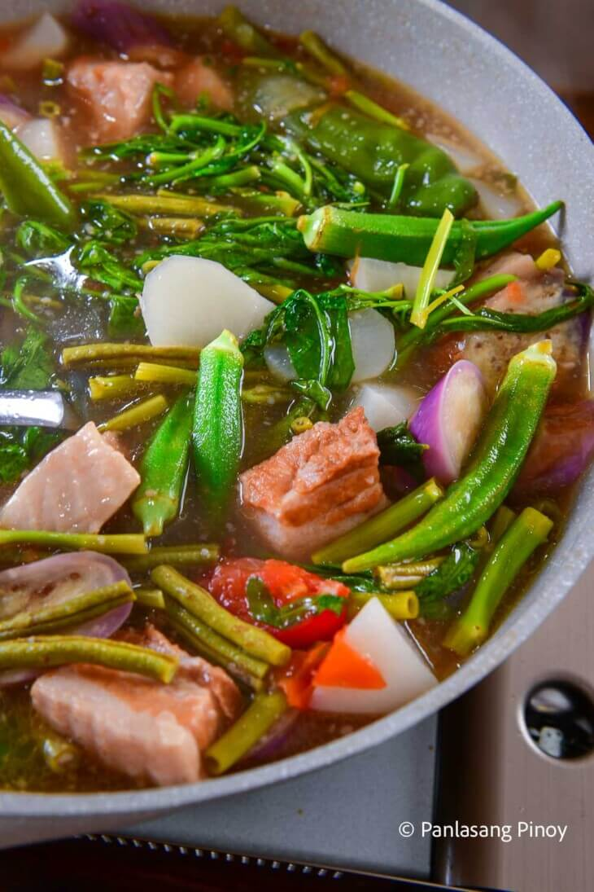
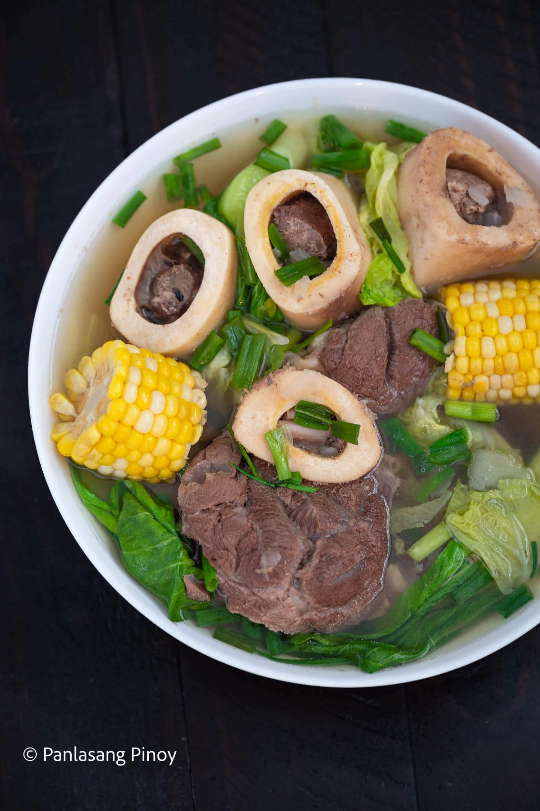

Categories
All Products (36)
-


Kare-Kare
$20
-
Knorr Cubes
$10
-

Sinigang
$30
-

Bulalo
$25
-

Lomi
$35
-
Mangga
$45
-
Baboy
$55
-
Baka
$13
-
Pating
$16
-
Iguana
$24
-
King Cobra
$27
-
Patatas
$33
-
Salamagi
$5
-
Salamanca
$60
-
Dionela
$70
-
Rambutan
$40
-
Adobong Sitaw
$50
Adobong Sitaw is a Filipino dish wherein string beans are cooked using the inadobo method. It is savory, slightly tangy, and packed with flavor.
-
Kamatis
$30
Typical of the Philippines, the kamatis tagalog is a particular variety of tomato with a flat shape and a rigged surface. The skin is thick and glossy, with a light red color. It is very resistant to the lack of water and to high temperatures, where it grows luxuriantly.